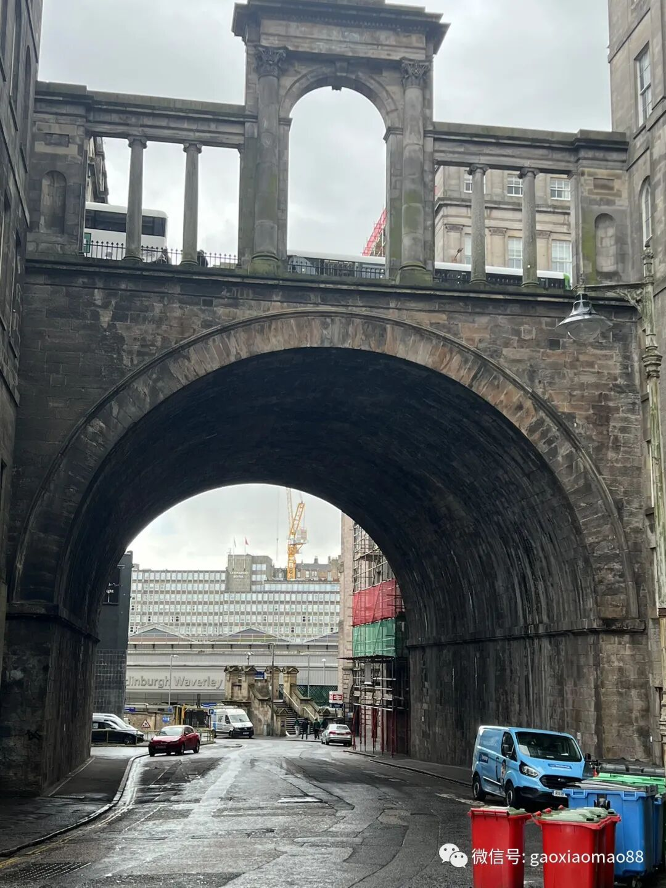
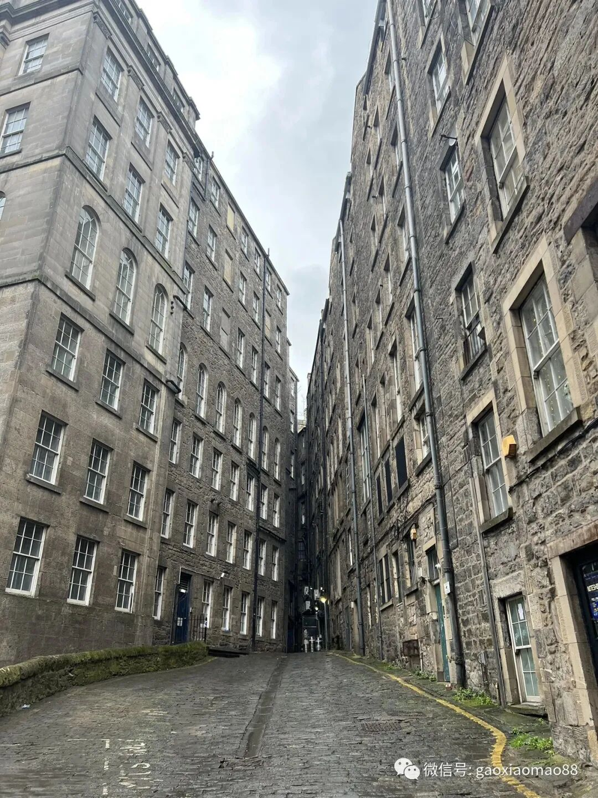
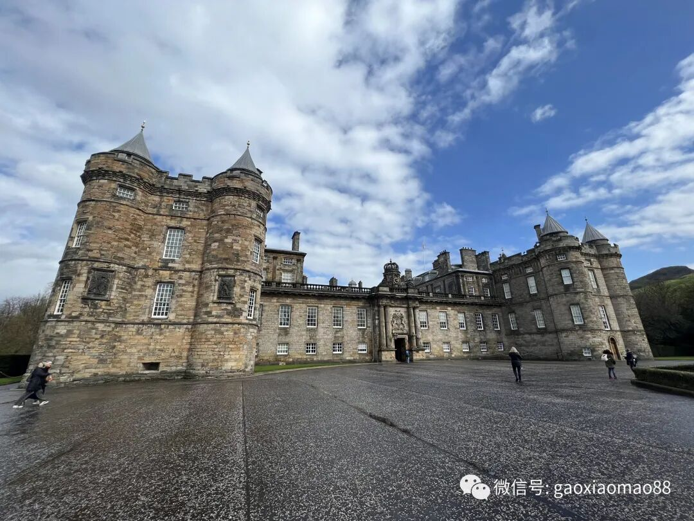
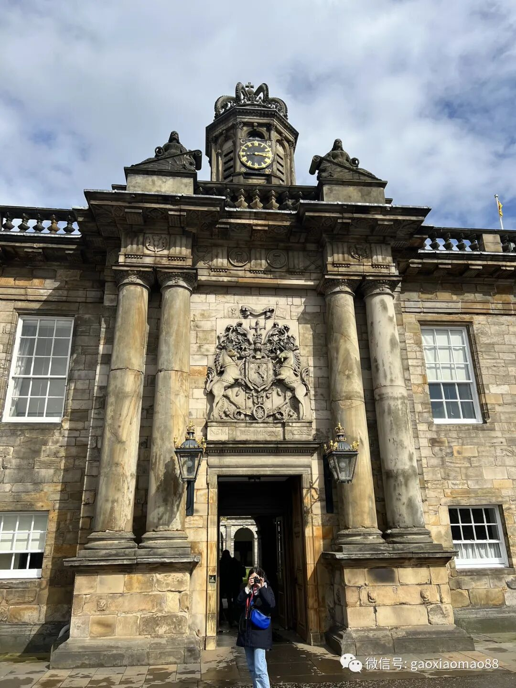
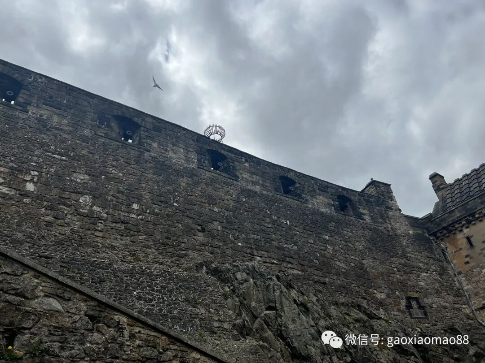
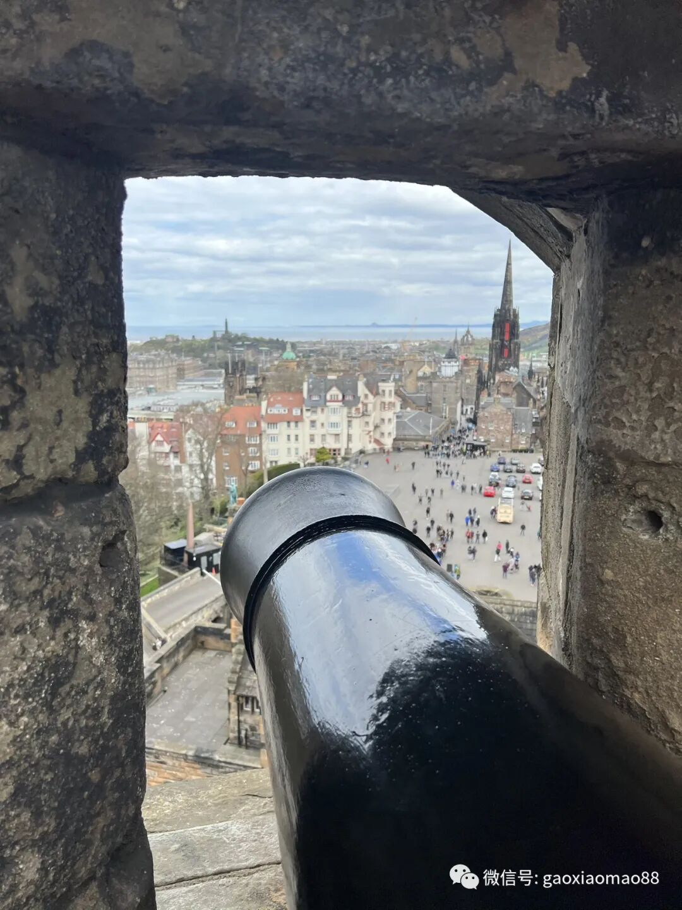
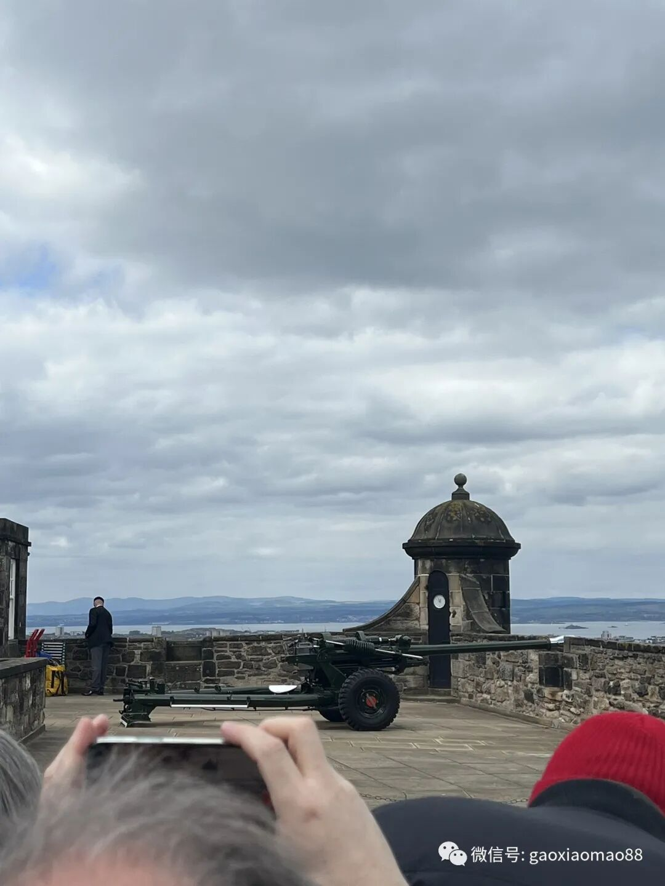
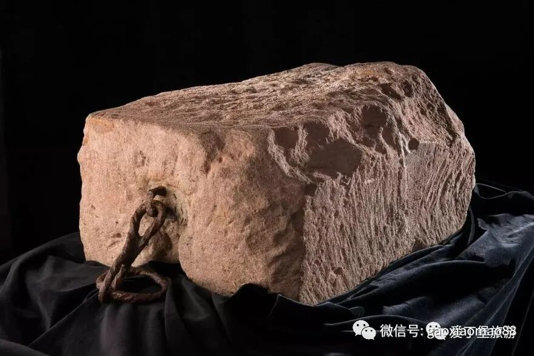
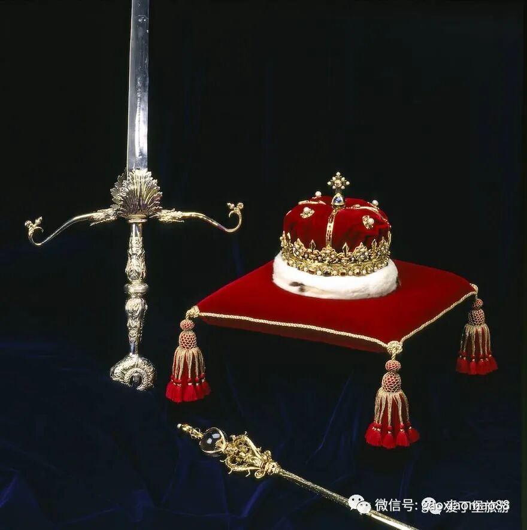
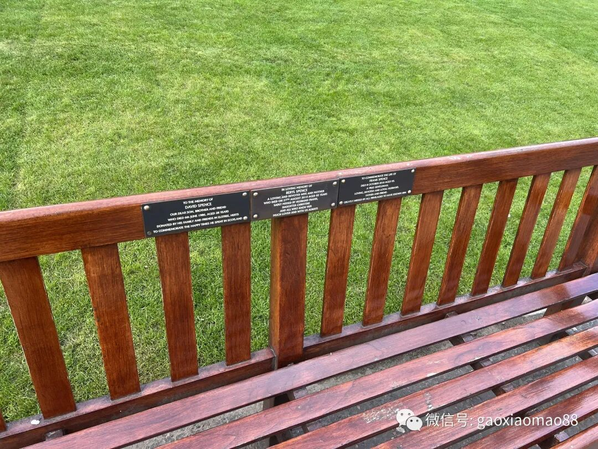

一晃也在英国玩了快两周了。发生了很多事情，有很多零碎的片段很有感触，但是总是在路上，没有闲下来的时间，加上好久不写文章，就一直拖到现在。
趁着这几天玩爱丁堡比较闲的时候写一下吧～
爱丁堡
这是一个灰暗的城市。当然不是指在这里的心情灰暗，而是这边的建筑都黑黑的，配上有点深蓝的天空，有一种重金属哥特式的气氛。
这种气氛，随便看几张图就懂了。


爱丁堡的天气也挺冷的，风大，而且温度比伦敦还更低一点。所幸我在的几天下雨的时间比较少，雨下得比较小，就没那么难。
荷里路德宫和亚瑟王座
我去逛了英国王室在苏格兰这边的官方行宫：荷里路德宫。王室的宫殿就是大啊，在卧室的前面，有十几个房间，用来更衣，会客，画廊，前厅，宴会，等等等等。里面的陈设，除了各种挂毯，还有很多画像以及瓷器。当然里面不许拍照，就只能放两张外面的照片。


以普通人来说，这样的规模确实是很了不起了，不过相比起梵蒂冈的豪华程度来说，还是差至少一个数量级。那边的挂毯的尺寸，藏品的数量，都是完全没法比的。
荷里路德宫的后山就是亚瑟王座所在的山。相传这个名字来自于亚瑟王，但是具体为什么叫亚瑟王座我就不知道了。我爬了大约半小时就登顶了，山上很多小黄花，绿油油的草坪，挺漂亮的。山下还有一片湖，里面有很多天鹅。
爱丁堡城堡
爱丁堡还有一个很有名的城堡，叫爱丁堡城堡。


在这里让我印象最深刻的是这边的一点钟炮。相传以前的人们一开始为了告诉全城的人时间，会把一个大球吊起来，到了下午一点就垂下去，人们看到这个大球的位置就知道有没有过一点了。
但是后来人们发现当起雾的时候，海上的水手就看不到那个大球了。为此人们想了个办法，每到一点钟不放球了，改成鸣炮了。这样海上的水手也能听见了。
这个传统一晃就几百年过去了，一直到现在这个一点钟炮也还在鸣响。我去的时候正好看到了鸣炮现场，炮击的一瞬间有一大团火焰从炮口冲出，周围的空气都变热了，跟我以前玩过的坦克炮很类似，不过没有炮弹出来又有些不同。

爱丁堡城堡里还放了苏格兰王室的皇冠以及权杖，以及他们的世世代代的王加冕的时候都要脚踩的一块叫命运之石的大石头。皇冠和权杖没有放在伦敦的那个皇冠和权杖那么厉害，那边的上面钻石超大的，闪瞎狗眼的那种，这边的这个没有那么多的闪耀的东西。而所谓的命运之石，则是一块儿明显被很多人摸了无数次的一块儿石头，它的表面都已经磨出油润的感觉了。上两张网图...


苏格兰的宝剑，权杖和王冠
最后我想聊聊的是他们爱丁堡城堡最中心的教堂。这个教堂里面陈列的是无数的名册，上面都是苏格兰在战争中死去的烈士名字，大部分都是1900-1960间的人。我想到在中国，或者美国，都绝无可能这么搞。一方面烈士太多，根本写不完，另一方面历史太长，很难兼顾到，也很难说清哪些是烈士，到时候肯定是一地鸡毛。不像苏格兰这样的国家相对简单。简单也有简单的好处，就是可以做得更有人情味。在整个国家的首都，最尊贵的地方留下这个国家英雄的名字，无疑是一种很好的念想。
念想
聊到这里我想聊聊念想这件事情。
人都想给这个世界留下点什么。
比如烈士，肯定希望能被后人记得自己做出的牺牲。
就连很多地方的长椅上，也都会写下捐赠者的名字。
又比如btc里的utxo里，人们喜欢放一些话在里面，希望矿工可以永久保存这些记录。

绝大部分的念想都留不下来。去看博物馆的时候感触对此特别深。基本上往前200年，还能很细粒度地记录社会上的很多事情。再往前，就只能记录历史上有哪几个王了。再往前走，王有哪些也都记不得了，只能记得每个朝代最厉害的那个王。再往前走，王也都记不得了，只能记得有哪些文明。
记录是可以留下来的，留几千年，石头上刻的很大的字还是可以留下来的。但是也只会被历史学家标为xx人的墓穴，成为一个大的遗址的一部分被人看到。
其实我们人类对于以前的人留下来的东西没有那么在意，如果这个人就只是一个普通人，对今天的人没有留下影响，也没有什么历史意义，那根本不会有人在意这个人留下来的东西。
所以真的不如吃点好的。